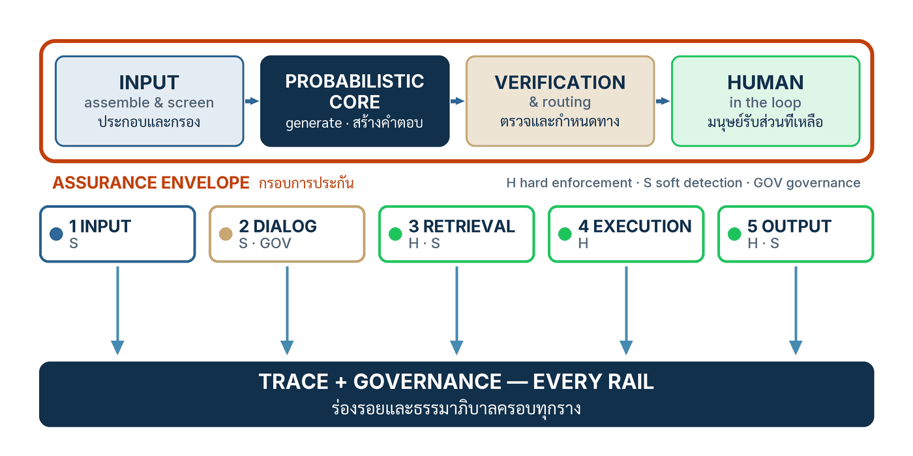

ในบทความนี้
- การ์ดสามชนิด — hard enforcement, soft detection, governance — และเหตุผลที่การแยกนี้ไม่ใช่เรื่องความสวยงามของภาษา
- ห้ารางบน envelope กับตารางเต็มของเปเปอร์ — และ threat model ที่ยอมรับตรง ๆ ว่าตัวตรวจเองก็ถูกโจมตีได้
- ลงมือทำ 7 ขั้น — จาก threat model ถึงรางทั้งห้า และ governance ที่พาดผ่านทุกราง
- ตารางรางควบคุมของน้องคราม — หกแถวที่เปลี่ยนบัญชีรอยต่อจากตอนที่ 3 ให้เป็นแผนควบคุม
- Validation check — หกคำถามที่ต้องตอบด้วย artifact ไม่ใช่คำคุณศัพท์
- ก้าวต่อไป — การ์ดวางครบแล้ว แต่ยังไม่มีอะไรพิสูจน์ว่ามันทำงาน
In this post
- Three kinds of guard — hard enforcement, soft detection, governance — and why the distinction is not a matter of prose style
- Five rails on the envelope with the paper's full table — and a threat model that admits outright that the verifier itself can be attacked
- The seven steps — from the threat model to all five rails, and the governance layer that crosses every one
- Nong Kram's rail table — six rows that turn post #3's seam register into a control plan
- Validation check — six questions that must be answered with artifacts, not adjectives
- The road ahead — the guards are all placed, but nothing has proved yet that they work
🤔 ถ้าคุณวางตัวตรวจจับ injection ที่แม่นยำ 95% ไว้หน้าโมเดล แล้วตั้งกติกาตายตัวว่าคะแนนเกิน 0.8 ให้บล็อกทันที — ตอนนี้ระบบของคุณ "มีการรับประกัน" แล้วหรือยัง?
ตอนที่แล้ว Write the Assurance Contract จบลงที่สัญญารายคุณสมบัติ: แถวไหนรับประกันเชิงโครงสร้าง (G) แถวไหนเป็นเพียงค่าประเมิน (E) ใครเป็นเจ้าของ และหลักฐานอะไรปิดแถว แต่กระดาษหยุดผลกระทบไม่ได้ด้วยตัวมันเอง คำถามที่ค้างจึงเป็นเชิงกลไกล้วน ๆ: กลไกที่ทำให้แถว G เป็นจริง ต้องวางอยู่ตรงไหนของเส้นทางคำขอ และเรามีกลไกกี่ชนิดให้เลือกวาง
คำตอบของตอนนี้ทั้งตอนมาจากบทที่ 7 ของเปเปอร์[1]: กลไกควบคุมมีสามชนิดที่ธรรมชาติต่างกันสิ้นเชิงและห้ามปนกัน — การบังคับเชิงโครงสร้าง (hard enforcement) ให้ invariant, การตรวจจับเชิงประเมิน (soft detection) ให้ค่าประเมินพร้อมอัตราพลาด, ธรรมาภิบาลระบบ (governance) ให้ความรับผิดรับชอบและการกู้คืน — แล้ววางลงบนห้ารางของเส้นทางคำขอ: input, dialog, retrieval, execution, output โดย governance พาดทุกราง สิ่งที่ต้องยอมรับตั้งแต่ต้น: การ์ดแข็งมีที่ยืนจริงแค่สามรอยต่อ ตัวตรวจเชิงความหมายทุกตัวอยู่ในพื้นที่โจมตีเสียเอง และผลลัพธ์สุดท้ายของการวางรางทั้งหมดคือความเสี่ยงคงเหลือ (residual risk) ที่ประกาศได้ — ไม่ใช่บทพิสูจน์ว่าปลอดภัย
1. การ์ดสามชนิด — และเหตุผลที่ห้ามปนกัน
การ์ดในระบบที่มี AI เป็นแกนมีสามชนิด แต่ละชนิดให้ของที่แลกกันไม่ได้: กฎที่ละเมิดไม่ได้ภายในสมมติฐาน คะแนนที่พลาดได้พร้อมอัตราพลาดที่วัดแล้ว และความสามารถในการรู้ตัวและย้อนกลับ การเรียกชนิดหนึ่งด้วยชื่ออีกชนิดไม่ใช่ความหละหลวมทางภาษา แต่คือการเขียนข้ออ้างเท็จลงในสัญญาที่เพิ่งเขียนเมื่อตอนที่แล้ว
| ชนิด | ให้อะไร | เป็นจริงเมื่อ | ทำอะไรไม่ได้ |
|---|---|---|---|
| Hard enforcement การบังคับเชิงโครงสร้าง |
invariant เชิงโครงสร้างบนทุกการทำงาน — authorisation, allow-list, การ validate schema และช่วงพารามิเตอร์, rate limit, ขอบเขตธุรกรรม, sandbox | ทุกเส้นทางของผลกระทบผ่านตัวกลางจริง (การผ่านตัวกลางครบทุกเส้นทาง — complete mediation) และ validator ถูกต้อง — invariant เป็นจริงภายในสมมติฐานเหล่านี้ ไม่ใช่โดยสัมบูรณ์ | ไม่รู้ว่าเนื้อหา "ดี" หรือ "ถูก" — รู้เพียงว่าคำขออยู่ในขอบเขตที่ประกาศไว้หรือไม่ |
| Soft detection การตรวจจับเชิงประเมิน |
ค่าประเมินความเสี่ยง — injection classifier, factuality scorer, semantic policy model, LLM judge | ประกาศประชากรที่วัด threshold ที่ตัดสิน และรายงาน false positive / false negative ณ threshold นั้น บนประชากรนั้น | ไม่ให้การรับประกันใด ๆ — คำตัดสินพลาดได้เสมอ และพลาดเป็นระบบตรงกลุ่มที่หลักฐานอ่อน |
| Governance ธรรมาภิบาลระบบ |
logging, approval, audit sampling, rollback, incident response — ความรับผิดรับชอบและการตอบสนองที่ควบคุมได้ | มีเจ้าของที่มีอำนาจจริง และเส้นทางกู้คืนเดินได้จริงเมื่อเกิดเหตุ | ไม่ได้ทำให้ความถูกต้องเชิงความหมายของรายการใดเกิดขึ้นเลย — มันคือ accountability ไม่ใช่ correctness |
threshold ตายตัวไม่ได้เปลี่ยนคะแนนที่พลาดได้ให้เป็นการ์ดที่เชื่อถือได้
กลับไปที่คำถามเปิดตอน หลายทีมเชื่อว่ากติกา deterministic — "เกิน 0.8 บล็อกเสมอ" — ครอบบนคะแนน classifier แล้วจะได้การรับประกัน เปเปอร์ตอบตรงที่สุด: การตรึง threshold ทำให้กติกาการตัดสินทำซ้ำได้ แต่คำตัดสินยังผิดบ่อยเท่าคะแนนที่อยู่ใต้มัน[1] สิ่งที่ได้คือประโยค "ระบบตัดสินตามกฎนี้เสมอ" — มีค่าต่อ audit แต่คนละเรื่องกับ "กฎนี้ตัดสินถูก" คะแนน 0.79 ที่เป็นการโจมตีจริงยังหลุด และ 0.81 ที่เป็นคำถามสุจริตยังถูกบล็อก ข้ออ้างที่ซื่อสัตย์แบบเดียวของ soft detector จึงมีรูปเดียว: "จับได้ …% พลาด …% บนประชากร … ณ threshold …"
ตัวตรวจซ้อนกันหลายชั้นไม่ได้อิสระต่อกันโดยการประกอบ
คำโต้แย้งที่ได้ยินบ่อย: "วาง detector ซ้อนสามตัว โอกาสหลุดพร้อมกันต่ำมาก" — การคูณความน่าจะเป็นแบบนั้นถูกต่อเมื่อทั้งสามอิสระต่อกัน ซึ่งเปเปอร์ชี้ว่าไม่จริงโดยการประกอบ: ตระกูลโมเดลแบ่งปัน pretraining corpora, objective, prior และ prompt template ของ evaluator ร่วมกัน ผลคือจุดบอดที่สัมพันธ์กัน — การโจมตีที่หลอกตัวหนึ่งมักหลอกอีกตัวด้วยเหตุเดียวกัน[1] ความอิสระจึงต้องวัด — เป็นพฤติกรรม false negative ร่วม (joint false negative) บนชุดโจมตีชุดเดียวกัน — ไม่ใช่อนุมานจากการเปลี่ยน vendor: การย้ายค่าย judge ลดความเสี่ยงได้จริง แต่ไม่ก่อตั้งความอิสระจนกว่าตัวเลขจะบอก
Quality gate คือตัวประเมินที่ต้องสอบเทียบ ไม่ใช่ผู้พิพากษา
เมื่อยอมรับแล้วว่า soft detection คือการวัด เปเปอร์ให้วินัยการใช้มันไว้สามข้อ ซึ่งผมยกมาตามลำดับ[1]
- ยึดตัวชี้วัดกับหลักฐาน (ground the metric) — เลือกการตรวจที่โยงกลับหาแหล่งได้ เช่น เทียบคำตอบกับ passage ที่ retrieve มาแบบระบุ span แทนคะแนนความชอบลอย ๆ
- กั้นด้วยของถูกก่อนตัดสินด้วยของแพง (gate cheaply before judging expensively) — เรียง cascade ให้ validate เชิงกฎ (schema, รูปแบบ, ช่วงค่า) ทำงานก่อน แล้วส่งเฉพาะส่วนที่เหลือให้โมเดลตัดสินซึ่งช้าและแพงกว่า
- ตัดสินผู้ตัดสิน (judge the judges) — evaluator แบบโมเดลพกอคติเชิงตำแหน่ง เข้าข้างคำตอบยาว และเข้าข้างผลงานตัวเอง จึงต้องสอบเทียบกับป้ายกำกับของมนุษย์ และถ้าเลือกได้ใช้ judge ต่างตระกูล — โดยการเปลี่ยนตระกูลไม่ได้ก่อตั้งความอิสระ
💡 มุมมองของผม: สินค้าที่ขายในชื่อ "guardrails" เกือบทั้งตลาดคือ soft detection ล้วน — classifier บวก threshold บวก dashboard — และหลายทีมติดตั้งเสร็จก็รายงานว่าระบบ "มีการรับประกันแล้ว" คำถามเดียวที่ผมใช้เจาะ: ถ้าคะแนนของตัวตรวจผิด อะไรหยุดผลกระทบ ถ้าคำตอบคือ "ไม่มี" องค์กรนั้นยังไม่มีการ์ดแข็งสักตัว มีแต่เครื่องวัดที่แต่งตัวเป็นรั้ว
2. ห้ารางบน envelope — และ threat model ที่ตรงไปตรงมา
เมื่อรู้จักการ์ดสามชนิดแล้ว คำถามคือวางตรงไหน เปเปอร์วาดกรอบการรับประกันรอบระบบ (assurance envelope) เป็นทางเดินสี่ช่วง: ประกอบและกรอง input → แกนความน่าจะเป็น generate → ชั้นตรวจและกำหนดเส้นทาง (แข็งบวกประเมิน) → มนุษย์รับส่วนตกค้าง วางรางที่ทุกรอยต่อเป็น defence in depth และคุณสมบัติที่ต้องอ่านให้แม่น: ระบบ deterministic เฉพาะในcontrol flow — เส้นทางของทุกคำตัดสินไล่ย้อนได้เสมอ แต่ตัวคำตัดสินไม่ได้ถูกเสมอ[1]
{kind=link}

ตารางนี้คือหัวใจของตอน — ห้ารางบวก governance พาดทุกราง แต่ละแถวระบุชนิดการ์ด สิ่งที่คุ้มครอง สัญญาณกับกติกา fallback และช่องขวาสุดที่สำคัญที่สุด: สิ่งที่รางนั้นมองไม่เห็นโดยการออกแบบ ซึ่งเปเปอร์บังคับให้เขียนตรง ๆ ไม่ปล่อยให้เดา[1]
| ราง | ชนิดการ์ด | สิ่งที่คุ้มครอง | สัญญาณ · กติกาตัดสิน · fallback | สิ่งที่รางนี้ไม่ครอบคลุม |
|---|---|---|---|---|
| 1 · Input | Soft | turn ของผู้ใช้อยู่ในขอบเขตงาน และไม่มีคำสั่งแฝงที่ตรวจพบได้ | คะแนน classifier (scope, injection) ณ threshold ที่ประกาศ · fallback: ปฏิเสธ หรือขอให้ถามใหม่ | มองไม่เห็นคำสั่งแฝงที่มาถึงภายหลังผ่าน retrieval หรือผลลัพธ์ของ tool |
| 2 · Dialog | Soft · Gov | ความสอดคล้องเชิงหัวข้อและนโยบายข้ามหลาย turn | คะแนนความสอดคล้องราย turn / ราย flow · แข็งได้เฉพาะจุดที่ flow ที่อนุญาตนับแจกแจงได้จำกัด · fallback: ดึงกลับเข้า flow หรือส่งต่อมนุษย์ | มองไม่เห็นคำขอที่ถูกนโยบายทุกข้อแต่รับใช้เป้าหมายของผู้โจมตี |
| 3 · Retrieval | Hard (provenance) · Soft (support) | แหล่งที่มาของทุก passage ที่เข้าสู่ context และคุณภาพการรองรับคำตอบ | สมาชิกภาพ allow-list ของแหล่ง = แข็ง บนเส้นทางผ่านตัวกลาง · support / relevance = ประเมิน · fallback: ตัด passage / ตอบโดยไม่ใช้ / abstain | passage จากแหล่งที่ถูกต้องซึ่งแม่นแต่พกคำสั่งแฝง ยังผ่านได้ รวมถึงการวางยาในแหล่งที่ allow-list ไว้เอง |
| 4 · Execution | Hard | ทุกผลกระทบต่อโลกภายนอก — รางเดียวในทั้งระบบที่ hard-bound ผลกระทบได้ | authorisation + schema + ช่วงพารามิเตอร์ + ขอบเขตธุรกรรม · deny by default · fallback: REJECT หรือ NEEDS_APPROVAL | ตัดสินไม่ได้ว่า call ที่ถูกรูปแบบทุกประการรับใช้เจตนาจริงของผู้ใช้หรือไม่ |
| 5 · Output | Hard (โครงสร้าง) · Soft (ความหมาย) | รูปแบบของ payload ที่ปล่อยออก และคุณภาพเชิงความหมายของมัน | schema parse = แข็ง · faithfulness / toxicity / privacy = ประเมิน · fallback: repair → regenerate → withhold → escalate | เรียกคืนข้อมูลที่ tool call ก่อนหน้าส่งออกไปแล้วไม่ได้ |
| ทุกราง · Governance | Hard (การเขียน trace) · Gov | ความรับผิดรับชอบและการกู้คืน — trace, review, rollback, incident response | การเขียนร่องรอยการตัดสินใจ (decision trace) เป็นเงื่อนไขแข็งของการปล่อย: เขียนไม่สำเร็จ = ไม่ปล่อย · ที่เหลือเป็นกระบวนการเชิงธรรมาภิบาล | ไม่ได้ป้องกันความผิดพลาดรายรายการใดเลย — ทำให้รู้เร็วขึ้นและย้อนได้เท่านั้น |
อ่านคอลัมน์ "ชนิดการ์ด" จากบนลงล่างจะเห็นข้อเท็จจริงที่ตอนนี้ตั้งชื่อตาม: invariant แข็งในเนื้อหาของระบบมีที่สามรอยต่อเท่านั้น — provenance ของ retrieval, execution และโครงสร้างของ output — บวกเงื่อนไขแข็งที่การเขียน trace ที่เหลือคือค่าประเมินบวกธรรมาภิบาล เปเปอร์มีหลักฐานบน specimen ของมันเองว่าเส้นแบ่งนี้จริง: การโจมตีที่เขียนหลังอ่าน implementation ปล่อย candidate ผิดนโยบายทะลุ soft rails 8 จาก 12 กรณี แต่ execution boundary กันผลกระทบต้องห้ามหมด 0 จาก 4 (เทียบ 4 จาก 4 เมื่อถอด envelope) — ตัวเลขนี้เป็น conformance ของ fixture ที่ผู้เขียนแต่งเอง ไม่ใช่ความปลอดภัยภาคสนาม ไม่ใช่คุณภาพของโมเดลใด[1] รายละเอียดเป็นของตอนหน้า
Threat model: ทรัพย์สิน เส้นแบ่งที่พังไปแล้ว และผู้โจมตี
รางจะวางถูกที่ต่อเมื่อรู้ว่าปกป้องอะไรจากใคร เปเปอร์เขียน threat model ไว้เรียบและครบ เริ่มจากทรัพย์สินสามก้อน[1]
- อำนาจสร้างผลกระทบ (effect authority) — สิทธิ์ในการเรียก tool ที่เปลี่ยนโลกจริง: โอนเงิน แก้คำสั่งซื้อ ส่งอีเมล
- ข้อมูล — corpus ที่ retrieve ได้ ความจำของ session และ credential ทุกใบที่ tool เอื้อมถึง
- ความไว้วางใจของผู้ใช้ — ทุกคำตอบผูกกับชื่อของระบบและองค์กรที่อยู่เบื้องหลังมัน
ส่วนเส้นแบ่งความเชื่อถือ (trust boundary) เปเปอร์พูดตรงมาก: ในระบบที่มี AI เป็นแกน เส้นแบ่งนี้ยุบรวมเป็นช่องทางเดียว — คำสั่งระบบ ข้อความผู้ใช้ และเนื้อหาที่ retrieve ไหลเข้า context window เดียวกัน สิทธิพิเศษจึงไหลไปกับเนื้อหา: ใครเขียนข้อความให้แกนอ่านได้ ก็มีโอกาสยืมอำนาจของแกน นี่คือ confused deputy ตามตำรา และเป็นคุณสมบัติของสถาปัตยกรรม ไม่ใช่ช่องโหว่ของ implementation ใด — งานของ Greshake และคณะสาธิตกับแอปพลิเคชันจริงมาแล้ว[4] ความสามารถของผู้โจมตีสรุปได้สี่บรรทัด
- ทำได้ — ฝังเนื้อหาไว้ในที่ที่ระบบจะไป retrieve เอง: รีวิว อีเมล หน้าเว็บ เอกสาร — นี่คือการฉีดคำสั่งแฝงทางอ้อม (indirect prompt injection)
- ทำได้ — ประดิษฐ์ turn สนทนา adversarial ใส่ระบบโดยตรงในฐานะผู้ใช้คนหนึ่ง
- ทำได้ — ปรับการโจมตีซ้ำตามสัญญาณที่สังเกตได้จากภายนอก: ข้อความปฏิเสธ พฤติกรรม fallback รูปแบบคำตอบ
- ทำไม่ได้ — แก้ weights ของโมเดล แก้โค้ด orchestration หรืออ่าน trace ที่บันทึกไปแล้ว
ตัวตรวจเองอยู่ในพื้นที่โจมตี
และนี่คือประโยคสำคัญที่สุดของ threat model ทั้งชุด: ตัวตรวจแบบโมเดลอยู่ข้างในพื้นที่โจมตี ไม่ใช่ข้างนอก gate ที่ใช้โมเดลตัดสิน — injection classifier, LLM judge, semantic policy model — ต้องอ่านข้อความที่ผู้โจมตีมีอิทธิพล จึงสืบทอด instruction/data confusion แบบเดียวกับแกนที่มันคุ้มกัน[1] หลักฐานภาคสนามชี้ทางเดียวกัน: แนวป้องกันแบบตัวตรวจจับกดอัตราสำเร็จการโจมตีเหลือราว 8% ใต้ชุดโจมตีดั้งเดิมของ AgentDojo[2] แต่การโจมตีแบบ adaptive ทำให้แนวป้องกันยุคนั้นเสื่อมลงชัดเจน[3] บทสรุปของเปเปอร์จึงแข็งแรง: คำตัดสินจากโมเดลเป็นหลักฐานประกอบ ไม่ใช่อำนาจตัดสิน — การกันผลกระทบยืนบนกลไกที่ execution rail และผลรวมของ envelope คือความเสี่ยงคงเหลือที่ระบุได้ ไม่ใช่บทพิสูจน์
💡 มุมมองของผม: วิธีจำที่ผมใช้สอนมีประโยคเดียว — การ์ดแข็งไม่อ่านหนังสือ การ์ดอ่อนอ่านหนังสือและถูกหนังสือหลอกได้ — กลไกแข็งจริงตัดสินจากคุณสมบัติที่ผู้โจมตีเขียนทับไม่ได้ (ตัวตน schema วงเงิน allow-list) วินาทีที่การ์ดเริ่ม "อ่าน" ภาษาธรรมชาติเพื่อตัดสิน มันย้ายเข้าพื้นที่โจมตีทันที และต้องถูกนับเป็นค่าประเมินตั้งแต่นั้น
3. ลงมือทำ 7 ขั้น
เจ็ดขั้นเรียงตามลำดับที่ควรทำจริง: threat model ก่อน (มันบอกว่ารางไหนสำคัญ) แล้วไล่วางรางตามเส้นทางคำขอซ้ายไปขวา ปิดด้วย governance พาดทุกราง ทุกขั้นจบด้วยหนึ่งจังหวะของน้องคราม ผู้ช่วยตอบลูกค้าของร้านครามคราฟต์ที่สร้างมาตั้งแต่ตอนที่ 1
ขั้นที่ 1 — เขียน threat model ก่อนวางการ์ดตัวแรก
เขียนเอกสารสั้นสามหัวข้อ: ทรัพย์สิน (อำนาจสร้างผลกระทบ ข้อมูล ความไว้วางใจ) เส้นแบ่งที่ข้อมูลไม่เชื่อถือไหลเข้า และความสามารถของผู้โจมตีพร้อมงบ — ลองได้กี่ครั้ง เห็นสัญญาณอะไร ปรับตัวเร็วแค่ไหน เหตุผลที่ต้องมาก่อน: รางที่วางโดยไม่มี threat model จะคุ้มครองสิ่งที่ป้องกันง่าย ไม่ใช่สิ่งที่มีค่า และช่องความเสี่ยงคงเหลือในขั้นที่ 7 ต้องไล่กลับมาหาเอกสารนี้ทุกช่อง งานของ NIST CAISI เรื่องประเมิน agent hijacking ชี้จุดเดียวกัน: การประเมินที่ไม่ประกาศความสามารถและงบของผู้โจมตี อ่านค่าไม่ได้[6]
# threat-model.md ของน้องคราม (ฉบับย่อ — artifact ของขั้นนี้)
ทรัพย์สิน:
effect_authority: refund(order_id, amount, reason) # เงินออกจากร้านจริง
data: policy/ + catalog/ (snapshot ที่ pin แล้ว), ความจำ session, order store
user_trust: ทุกคำตอบออกในนามร้านครามคราฟต์
ผู้โจมตีทำได้:
- ฝังข้อความในรีวิวสินค้า อีเมล หรือหน้าเว็บที่ระบบจะ retrieve ภายหลัง
- สร้าง turn สนทนา adversarial โดยตรง และลองซ้ำโดยดูสัญญาณตอบกลับ
ผู้โจมตีทำไม่ได้:
- แก้ weights แก้โค้ด orchestration หรืออ่าน trace ที่บันทึกแล้ว
งบผู้โจมตี: บัญชีลูกค้าฟรี ไม่จำกัดจำนวน turn — ระบบเปิดสาธารณะขั้นที่ 2 — วางรางที่หนึ่ง: Input
วาง classifier สองตัวที่ turn ผู้ใช้ — ตรวจขอบเขตงาน (scope) กับตรวจการฉีดคำสั่งแฝง — ที่ threshold ที่ประกาศเป็นลายลักษณ์อักษร พร้อมประชากรและอัตราพลาดสองทิศ นี่คือการ์ดอ่อนโดยธรรมชาติ: fallback คือปฏิเสธสุภาพหรือขอให้ถามใหม่ และคะแนนดิบทุกครั้งลง trace เพื่อ tune ย้อนหลัง ข้อจำกัดตามตาราง: รางนี้เห็นเฉพาะ turn ผู้ใช้ — คำสั่งแฝงที่มากับ passage ทีหลังมองไม่เห็นโดยการออกแบบ สำหรับน้องคราม: block เมื่อคะแนน injection เกิน 0.85 วัดบนชุด 300 turn ภาษาไทยที่ติดป้ายเอง (ตัวเลขของบทเรียน ไม่ใช่ของเปเปอร์) และข้อความปฏิเสธบอกสั้น ๆ ว่าน้องครามช่วยเรื่องคำสั่งซื้อและสินค้าของร้านเท่านั้น
ขั้นที่ 3 — วางรางที่สอง: Dialog
ตรวจความสอดคล้องเชิงนโยบายข้าม turn ไม่ใช่ราย turn เดี่ยว — การโจมตีจำนวนมากกระจายเป็นหลายข้อความที่แต่ละข้อความดูบริสุทธิ์ กติกาของเปเปอร์: รางนี้เป็น invariant แข็งได้เฉพาะจุดที่ flow ที่อนุญาตนับแจกแจงได้จำกัด ที่เหลือเป็นคะแนนประเมิน สำหรับน้องคราม: flow คืนเงินถูกบีบเป็น state machine สี่สถานะ — ระบุคำสั่งซื้อ → ตรวจสิทธิ์ตามนโยบาย → สรุปยอดและเหตุผล → ยืนยัน — นับแจกแจงได้จึงบังคับแข็งว่าห้ามข้ามสถานะ บทสนทนานอก flow ใช้คะแนนประเมิน และเมื่อต่ำติดกันสอง turn ระบบดึงกลับเข้าเรื่องหรือเสนอส่งแอดมิน
ขั้นที่ 4 — วางรางที่สาม: Retrieval
รางนี้มีการ์ดสองชั้นห้ามสับสน: provenance เป็นการ์ดแข็ง — ทุก passage ที่เข้าสู่ context ต้องมาจากแหล่งที่เป็นสมาชิก allow-list บังคับด้วยโค้ดบนเส้นทางที่ผ่านตัวกลางครบทุกเส้นทาง — ส่วนsupport/relevance เป็นการ์ดอ่อน fallback เรียงเบาไปหนัก: ตัด passage ทิ้ง ตอบโดยไม่ใช้ หรือ abstain สำหรับน้องคราม: allow-list คือ policy/@snapshot-2026-09-01 กับ catalog/@snapshot-2026-09-01 เท่านั้น — รีวิวลูกค้าซึ่งคนนอกเขียนได้ ไม่อยู่ใน allow-list โดยเจตนา และ passage ที่ support ต่ำกว่า 0.6 (เกณฑ์บทเรียน) ถูกตัดก่อนประกอบ context เสมอ แต่จดช่องขวาสุดของตารางไว้: passage จาก policy/ ที่แม่นทุกตัวอักษรแต่มีประโยคคำสั่งฝังอยู่ ผ่านรางนี้ได้ — นั่นคือเหตุผลที่ขั้นที่ 5 ต้องมี
ขั้นที่ 5 — วางรางที่สี่: Execution — พรมแดนแข็งหนึ่งเดียวของผลกระทบ
นี่คือรางสำคัญที่สุดของทั้งระบบ เพราะเป็นรางเดียวที่ hard-bound ผลกระทบได้: ทุก tool call ต้องผ่าน authorisation แบบ deny by default, validate schema กับช่วงพารามิเตอร์ และขอบเขตธุรกรรม ก่อนอะไรจะเกิดจริงกับโลกภายนอก — ตัดสินจากคุณสมบัติเชิงโครงสร้างเท่านั้น ไม่อ่านคำอธิบายของโมเดลสักคำ guard ของน้องครามทั้งตัวหน้าตาแบบนี้ (เพดาน 1,500 บาทคือค่าบทเรียน)
# execution guard ของน้องคราม — deny by default
ALLOWED_TOOLS = {"refund"} # เครื่องมือเดียวที่ระบบมีสิทธิ์เรียก
def authorise(call, session, policy, store):
if call.tool not in ALLOWED_TOOLS:
return Verdict.REJECT("tool_not_allowed") # ไม่อยู่ในรายการ = ปฏิเสธ
errors = REFUND_SCHEMA.validate(call.args) # โครงสร้างต้องผ่านก่อน
if errors:
return Verdict.REJECT("schema_invalid", errors)
order = store.get(call.args["order_id"])
if order is None or order.customer_id != session.customer_id:
return Verdict.REJECT("not_order_owner") # ผูกกับตัวตนที่ยืนยันแล้ว
amount = call.args["amount"]
if amount <= 0 or amount > order.paid_amount:
return Verdict.REJECT("amount_out_of_range") # ห้ามเกินยอดที่จ่ายจริง
if amount > policy.refund_cap: # เพดานต่อรายการ: 1,500 บาท
return Verdict.NEEDS_APPROVAL("over_cap") # ย้อนยาก → มนุษย์อนุมัติ
return Verdict.ALLOW # ผ่านทุกข้อจึงอนุญาตสังเกตว่าไม่มีบรรทัดไหนสนใจว่าโมเดลอธิบายการคืนเงินไว้สวยแค่ไหน — และจำข้อจำกัดของราง: call ที่ถูกรูปแบบทุกประการแต่รับใช้เป้าหมายผู้โจมตี (ลูกค้าจริงถูกหลอกให้ขอคืนเงินเข้าบัญชีคนอื่น) รางนี้ตัดสินไม่ได้ นั่นคืองานของ dialog rail กับมนุษย์ที่ขั้น NEEDS_APPROVAL
ขั้นที่ 6 — วางรางที่ห้า: Output
ก่อนปล่อยคำตอบ: schema parse เป็นการ์ดแข็ง — payload ที่ parse ไม่ผ่าน ไม่มีวันหลุดออกไป — ส่วน faithfulness, toxicity, privacy เป็นการ์ดอ่อนที่ต้องประกาศ threshold fallback เป็นบันไดขั้นจำกัด: repair → regenerate → withhold → escalate ห้ามวนไม่รู้จบ สำหรับน้องคราม: คำตอบทุก turn ต้อง parse ผ่าน reply{text, order_refs[], refund_summary?} ก่อน แล้วตรวจ faithfulness เทียบ passage (เกณฑ์บทเรียน 0.7) และสแกนเลขบัตร เบอร์โทร ที่อยู่ของลูกค้าคนอื่น ตกข้อไหน → ซ่อมหนึ่งครั้ง → generate ใหม่หนึ่งครั้ง → ยังตกให้ withhold แล้วส่งแอดมิน และจำสิ่งที่รางนี้ทำไม่ได้: ข้อมูลที่ tool call ก่อนหน้าส่งออกไปแล้วเรียกคืนไม่ได้ — การกัน exfiltration เกิดที่ขั้นที่ 5 ไม่ใช่ที่นี่
ขั้นที่ 7 — พาด governance ทุกราง แล้วเขียนช่องความเสี่ยงคงเหลือตามจริง
สองงานสุดท้าย งานแรกเป็นโค้ด: ให้การเขียน trace เป็นเงื่อนไขแข็งของการปล่อย — release ถูกบล็อกจนกว่า trace จะ commit สำเร็จ นี่คือความหมายเชิงกลไกของล้มแบบปิด (fail-closed) สำหรับหลักฐาน งานที่สองเป็นเอกสาร: review, rollback ผ่าน release manifest, incident response พร้อมเจ้าของ และ — ข้อที่ทีมส่วนใหญ่ข้าม — เขียนช่องความเสี่ยงคงเหลือของทุกรางตามจริง ลอกจากคอลัมน์ "สิ่งที่รางนี้ไม่ครอบคลุม" ในหัวข้อ 2 ไม่ใช่เขียนว่า "ไม่มี"
# การปล่อยของน้องคราม — trace เป็นเงื่อนไขแข็ง
def execute_route(release_decision, payload, trace):
trace_id = trace_store.commit(trace) # เขียน trace ก่อนปล่อยเสมอ
if trace_id is None: # เขียนไม่สำเร็จ = ไม่ปล่อยอะไรทั้งนั้น
return Route.FAIL_CLOSED # ล้มแบบปิด — ไม่มีหลักฐาน ไม่มีผล
return deliver(payload, trace_id) # ปล่อยพร้อมหมายเลขหลักฐาน4. ตารางรางควบคุมของน้องคราม
Artifact ของตอนนี้คือตารางเดียวที่รวมเจ็ดขั้น — บัญชีรอยต่อ (seam register) จากตอนที่ 3 The AI-OS Mental Model ที่ถูกเลื่อนขั้นจาก "รายการจุดที่การรับประกันเดิมพัง" เป็น "แผนควบคุมที่ระบุการ์ด threshold, fallback และความเสี่ยงคงเหลือของแต่ละจุด" ตัวเลขทุกตัวเป็นของบทเรียน วัดหรือกำหนดเองสำหรับน้องคราม ไม่ใช่ของเปเปอร์
| ราง | ชนิด | กลไก | threshold · ประชากร (เมื่อ soft) | fallback | ความเสี่ยงคงเหลือ (ผู้รับ: เจ้าของร้านครามคราฟต์ · ทบทวน 1 ธ.ค. 2026) |
|---|---|---|---|---|---|
| Input | Soft | scope + injection classifier หน้า turn ผู้ใช้ | block ≥ 0.85 · ชุด 300 turn ไทยติดป้ายเอง (จับ 92% / บล็อกผิด 3%) | ปฏิเสธสุภาพ / ขอถามใหม่ | คำสั่งแฝงที่มากับ passage หรือผล tool — รางนี้ไม่เห็น |
| Dialog | Hard เฉพาะ refund flow · Soft ที่เหลือ | state machine 4 สถานะของ flow คืนเงิน + คะแนนนโยบายราย turn | ดึงกลับเมื่อคะแนน < 0.5 สอง turn ติด · ชุดสนทนา 60 บท | ดึงกลับเข้า flow / เสนอส่งแอดมิน | คำขอถูกนโยบายทุกข้อที่รับใช้เป้าหมายผู้โจมตี |
| Retrieval | Hard (provenance) · Soft (support) | allow-list = policy/ + catalog/ snapshot ที่ pin ใน manifest · คะแนน support ต่อ passage | ตัด passage เมื่อ support < 0.6 · วัดบนชุดถาม-ตอบ 120 ข้อ | ตัด passage / ตอบโดยไม่ใช้ / abstain | passage ในแหล่งถูกต้องที่แม่นแต่พกคำสั่งแฝง และการวางยาใน corpus เอง |
| Execution | Hard | guard จากขั้นที่ 5: allow-list เครื่องมือเดียว, schema, ผูกตัวตนเจ้าของคำสั่งซื้อ, เพดาน 1,500 บาท, deny by default | — (ไม่มี threshold เพราะไม่ใช่คะแนน) | REJECT / NEEDS_APPROVAL ให้มนุษย์ | call ถูกรูปแบบที่ไม่ตรงเจตนาจริงของลูกค้า — เหลือให้มนุษย์ในขั้นอนุมัติ |
| Output | Hard (schema) · Soft (ความหมาย) | parse ต่อ reply schema + faithfulness เทียบ passage + สแกน PII | faithfulness ≥ 0.7 · ชุดถาม-ตอบ 120 ข้อชุดเดียวกับ retrieval | repair → regenerate → withhold + ส่งแอดมิน | ข้อมูลที่ tool ส่งออกไปก่อนถึงรางนี้ — เรียกคืนไม่ได้ |
| ทุกราง · Governance | Hard (เขียน trace) · Gov | trace commit ก่อนปล่อยเสมอ · audit sample 5% รายสัปดาห์ · rollback ผ่าน release manifest · เจ้าของ incident ระบุชื่อ | — (เงื่อนไขแข็ง ไม่ใช่คะแนน) | เขียน trace ไม่สำเร็จ = FAIL_CLOSED ไม่ปล่อย | ไม่ป้องกันความผิดรายรายการใด — ให้แค่รู้เร็วและย้อนได้ |
ตารางนี้ทำหน้าที่อีกข้อ: บอกว่าแต่ละราง discharge แถวไหนของสัญญาการรับประกันเชิงระบบ (assurance contract) จากตอนที่ 7 — สัญญาที่ไม่มีกลไกรองรับเป็นแค่กระดาษ
- Execution rail → ปิดแถว Authorised effects (G) — กลไกเดียวที่ค้ำคำว่า G ของแถวนั้น
- Output rail (ฝั่ง schema) → ปิดแถว Output structure (G) ฝั่งความหมายให้หลักฐานแก่ Semantic quality (E)
- Retrieval rail → provenance แข็งค้ำฝั่ง G ของ Injection containment ร่วมกับ execution คะแนน support ให้หลักฐานแก่ Semantic quality (E)
- Input rail → ให้หลักฐานฝั่ง detection (E) ของ Injection containment — และห้ามอ้างเกินนั้น
- Dialog rail → ให้หลักฐานแก่ Task correctness (E) มิติข้าม turn ส่วน state machine เป็น invariant แข็งเฉพาะจุด
- Governance ทุกราง → ปิดแถว Change control (G) และเงื่อนไข Auditable — trace ครบทุกเส้นทางคือหลักฐาน
5. Validation check — ตรวจรางของระบบคุณเอง
ก่อนไปตอนถัดไป ตอบหกข้อนี้กับระบบของคุณเอง กติกาเดิมของทั้งซีรีส์: ทุกคำตอบต้องชี้ artifact ที่จับต้องได้ ไม่ใช่คำคุณศัพท์[1]
| คำถาม | ผ่านเมื่อ | artifact ที่ต้องชี้ได้ |
|---|---|---|
| invariant แข็งของระบบคุณคืออะไร และอยู่บน code path ไหน | ชี้ไฟล์กับฟังก์ชันได้ครบ (น้องครามมีสาม: provenance, execution guard, output parse) และที่เหลือทั้ง stack ติดป้าย estimate หรือ governance | ตารางรางควบคุมที่คอลัมน์ "ชนิด" ชี้ path ของโค้ดจริง |
| soft detector ทุกตัวมีประชากร threshold และอัตราพลาดสองทิศไหม | ทุกตัวมีครบสามอย่าง วัดบนชุดที่ระบุที่มาได้ | detector scorecard — หนึ่งแถวต่อหนึ่งตัวตรวจ |
| detector ที่วางซ้อนกัน เคยวัด joint false negative หรือยัง | มีการรันชุด adversarial ชุดเดียวกันผ่านทุกตัวและนับกรณีที่หลุดพร้อมกัน — ไม่ใช่อนุมานจากการใช้คนละ vendor | รายงานผลรันบนชุดโจมตีร่วม พร้อมตัวเลขหลุดพร้อมกัน |
| tool call ที่ไม่อยู่ใน allow-list ถูกปฏิเสธจริงไหม | เทสต์ที่เรียก tool นอกรายการแล้วได้ REJECT พร้อม trace — รันซ้ำได้ | เทสต์ deny-by-default ใน harness + trace ของการปฏิเสธ |
| ถ้า trace store ล่ม ระบบยังปล่อยผลไหม | มีเทสต์ที่ปิด trace store แล้วการปล่อยถูกบล็อกเป็น FAIL_CLOSED ทุกครั้ง | เทสต์ fail-closed ของเส้นทางปล่อย พร้อมผลรัน |
| ช่องความเสี่ยงคงเหลือของทุกรางเขียนตามจริงหรือเขียนว่า "ไม่มี" | ทุกรางมีอย่างน้อยหนึ่งข้อที่ยอมรับว่าไม่ครอบคลุม พร้อมชื่อผู้รับความเสี่ยงและวันทบทวน | คอลัมน์ขวาสุดของตารางราง ที่มีชื่อคนจริงกำกับ |
6. ก้าวต่อไป
ถ้าต้องสรุปเหลือประโยคเดียว ผมเลือก: วาง invariant แข็งที่รอยต่อที่รับมันได้ วัดคุณสมบัติเชิงความหมายเป็นค่าประเมินที่พลาดได้ และให้ธรรมาภิบาลทำหน้าที่ของมันคือรู้เร็วและย้อนได้ — อย่าให้ชนิดไหนสวมชื่อของชนิดอื่น ระบบน้องครามตอนนี้มีการ์ดครบทุกรอยต่อ มี threat model ที่ยอมรับว่าตัวตรวจถูกโจมตีได้ และมีตารางโยงทุกรางกลับหาสัญญาของตอนที่แล้ว
สิ่งที่ตอนนี้ยังไม่ได้ทำเลยคือการพิสูจน์ เรายังไม่ได้รันอะไรสักอย่าง: envelope ทั้งใบ route กรณี benign กับ fault-injected ตามสเปกจริงไหม ถอดการ์ดทีละตัวแล้วอะไรหลุด การโจมตีที่เขียนหลังอ่านกติกาของเราทะลุแค่ไหน และการคืนเงินซ้ำกับ tool ที่พังกลางทางล้มแบบปิดจริงไหม ทั้งหมดคือ harness ของตอนหน้า Prove It — golden set, ablation และการโจมตีที่รู้ไส้ระบบ ตอนที่ตัวเลข 517 executions ของเปเปอร์ถูกแกะทีละตาราง
🎯 สิ่งสำคัญที่ต้องจำ
- Hard enforcement = การบังคับเชิงโครงสร้าง — invariant บนทุกการทำงานภายในสมมติฐาน (complete mediation + validator ถูกต้อง) รู้แค่ "อยู่ในขอบไหม" ไม่รู้ "ดีไหม"
- Soft detection = การตรวจจับเชิงประเมิน — คะแนนที่พลาดได้ มีความหมายเฉพาะเมื่อประกาศประชากร threshold และอัตราพลาดสองทิศ — threshold ตายตัวทำให้กติกาทำซ้ำได้ แต่ไม่ได้ทำให้คำตัดสินถูกขึ้น
- Governance = ธรรมาภิบาลระบบ — accountability และการกู้คืน ไม่เคยป้องกันความผิดพลาดรายรายการ
- Five rails = input · dialog · retrieval · execution · output บวก governance พาดทุกราง — invariant แข็งมีจริงที่สามรอยต่อ (provenance, execution, โครงสร้าง output) บวกเงื่อนไขแข็งที่การเขียน trace
- Verifier in the threat surface = ตัวตรวจแบบโมเดลอ่านข้อความที่ผู้โจมตีมีอิทธิพล — คำตัดสินของมันเป็นหลักฐานประกอบ ไม่ใช่อำนาจตัดสิน การกันผลกระทบยืนบนกลไกเท่านั้น
- Residual risk = ความเสี่ยงคงเหลือ — ผลลัพธ์ที่ซื่อสัตย์ที่สุดของ envelope ทั้งใบ: ประกาศว่าอะไรไม่ครอบคลุม ใครรับ และทบทวนเมื่อไร — ไม่ใช่คำว่า "ปลอดภัย"
อ้างอิง
ตรวจสอบทุกแหล่งเมื่อ 8 กันยายน 2026 (เวลาประเทศไทย) · ป้ายหลักฐานสี่แบบ: Law ตัวบทกฎหมายหรือประกาศทางการ · Standard มาตรฐานหรือกรอบทางการที่เผยแพร่แล้ว · Study งานวิจัยหรือสัญญาณภาคสนาม · Synthesis การสังเคราะห์ของผู้เขียนหรือแหล่งที่ไม่ใช่งานวิจัย
- Synthesis Anirach Mingkhwan. Engineering AI-Core Systems: A Reference Architecture and Assurance Contract for Software 3.0 — CreativeLAB, FITM, KMUTNB, 2026. เอกสารที่ผู้เขียนจัดหาให้ ยังไม่ตีพิมพ์ ไม่มี URL สาธารณะ จึงไม่มีลิงก์และไม่มีวันเข้าถึง. รองรับ: การ์ดสามชนิดของบทที่ 7 ประโยคเรื่อง threshold ตายตัว จุดบอดที่สัมพันธ์กันและการวัด joint false negative วินัยสามข้อของ quality gate ตาราง Table 6 ทั้งหกแถวรวมคอลัมน์ที่ไม่ครอบคลุม รูป envelope ที่ deterministic เฉพาะ control flow, threat model ทั้งชุดรวมตัวตรวจในพื้นที่โจมตี และตัวเลข adaptive 8/12 กับ 0/4 เทียบ 4/4 พร้อมประโยคขอบเขต conformance ของ fixture ที่แต่งขึ้น
- Study Debenedetti, E., Zhang, J., Balunović, M., et al. AgentDojo: A Dynamic Environment to Evaluate Prompt Injection Attacks and Defenses for LLM Agents — NeurIPS Datasets & Benchmarks 2024. รองรับ: สภาพแวดล้อมประเมิน prompt injection สำหรับ agent และตัวเลข attack success ราว 8% ของแนวป้องกันแบบตัวตรวจจับใต้ชุดโจมตีดั้งเดิม — อ้างตามที่เปเปอร์ [1] อ้างถึง
- Study Zhan, Q., Fang, R., Panchal, H.S., Kang, D. Adaptive Attacks Break Defenses Against Indirect Prompt Injection Attacks on LLM Agents — arXiv:2503.00061, 2025. arxiv.org — เข้าถึง 2026-09-08. รองรับ: ข้อความว่าการโจมตี adaptive ทำให้แนวป้องกัน indirect prompt injection ยุคนั้นเสื่อมลง — เหตุผลหลักที่คำตัดสิน detector เป็นได้แค่สัญญาณประกอบ
- Study Greshake, K., Abdelnabi, S., Mishra, S., et al. Not What You've Signed Up For: Compromising Real-World LLM-Integrated Applications with Indirect Prompt Injection — ACM AISec 2023, pp. 79–90. รองรับ: การสาธิตการฉีดคำสั่งแฝงทางอ้อมผ่านเนื้อหาที่ฝังให้ระบบ retrieve ในแอปจริง และภาพเส้นแบ่งความเชื่อถือที่ยุบรวมจนสิทธิพิเศษไหลไปกับเนื้อหา
- Standard OWASP Foundation. OWASP Top 10 for LLM Applications — 2025. รองรับ: การจัดให้ prompt injection เป็นความเสี่ยงอันดับต้นของแอปพลิเคชัน LLM ในทะเบียนความเสี่ยงมาตรฐานอุตสาหกรรม — บริบทที่รางที่ 1 และรางที่ 5 ของตอนนี้ตอบสนอง
- Study NIST CAISI. Strengthening AI Agent Hijacking Evaluations — technical blog, 2025. nist.gov — เข้าถึง 2026-09-08. รองรับ: แนวปฏิบัติการประเมิน agent hijacking ด้วยชุดโจมตีที่ต้องปรับปรุงต่อเนื่อง — หนุนขั้นที่ 1 เรื่องประกาศความสามารถและงบของผู้โจมตี
🤔 If you put an injection detector that is 95% accurate in front of your model and fix a deterministic rule — block whenever the score exceeds 0.8 — does your system now "have a guarantee"?
The previous post, Write the Assurance Contract, ended with one of the most valuable sheets of paper in the project: a per-property contract that separates which rows are structurally guaranteed (G), which are only estimates with error rates (E), who owns each row, and what evidence discharges it. But paper has never stopped an effect by itself. The question left open is purely mechanical: where on the path of a request must the mechanisms sit that make the G rows true — and how many kinds of mechanism do we actually have to place?
This whole post's answer comes from Section 7 of the paper[1]: controls come in three kinds whose natures are completely different and which must never be conflated — hard enforcement gives invariants, soft detection gives fallible estimates with error rates, governance gives accountability and recovery — and all three are placed on the five rails of the request path: input, dialog, retrieval, execution, output, with governance crossing every rail. Three things must be accepted from the start: hard guards have a real footing at only three seams, every semantic verifier sits inside the attack surface, and the final product of all this rail-laying is declared residual risk — not a proof of safety.
1. Three Control Classes — and Why They Must Never Be Conflated
Guards in an AI-core system come in three kinds, and each kind gives something the others cannot substitute for: the first gives rules that cannot be violated within stated assumptions, the second gives fallible scores with measured error rates, the third gives the ability to notice and to reverse. Calling one kind by another kind's name is not linguistic sloppiness — it is writing a false claim into the very contract we spent the last post drafting.
| Class | What it provides | Real when | What it cannot do |
|---|---|---|---|
| Hard enforcement | Structural invariants on every execution — authorisation, allow-lists, schema and parameter-range validation, rate limits, transaction bounds, sandboxing | Every effect path really passes through the mediator (complete mediation) and the validator is correct — the invariant holds within those assumptions, never absolutely | It does not know whether content is "good" or "right" — only whether a request falls inside the declared bounds |
| Soft detection | Risk estimates — injection classifiers, factuality scorers, semantic policy models, LLM judges | The measurement population is declared, the decision threshold is declared, and false-positive and false-negative rates are reported at that threshold, on that population — this is the only characterisation it has | It gives no guarantee of any kind — its verdicts can always be wrong, and are wrong systematically in the slices where evidence is thin |
| Governance | Logging, approval, audit sampling, rollback, incident response — accountability and controlled response | A person with real authority owns it, and the recovery route is actually walkable when the incident comes | It produces no semantic correctness for any individual item — it is accountability, not correctness |
A fixed threshold does not turn a fallible score into a reliable guard
Back to the opening question. Many teams believe that clamping a deterministic rule — "always block above 0.8" — onto a classifier's score produces a guarantee. The paper answers this more directly than anything else in the chapter: fixing the threshold makes the decision rule reproducible, while the decision stays wrong exactly as often as the score beneath it[1]. What you gain from a fixed threshold is the ability to say "the system always decides by this rule" — genuinely valuable for an audit — but that is a different statement from "this rule decides correctly". The 0.79-scoring turn that is a real attack still slips through, and the 0.81-scoring turn that is an honest question still gets blocked. The only honest claim a soft detector supports therefore has exactly one shape: "catches …%, misses …%, measured on population …, at threshold …" — and no other shape.
Stacked detectors are not independent by construction
The next objection I hear often is "we stack three detectors, so the odds of all three missing at once are tiny" — and that multiplication of probabilities is valid only if the three detectors are independent, which the paper says is false by construction: model families share pretraining corpora, objectives, priors, and even the evaluator prompt templates. The result is correlated blind spots — an attack that fools one tends to fool the next for the same underlying reason[1]. Independence is therefore something that must be measured — as joint false-negative behaviour on one shared adversarial set — never inferred from a change of vendor. Moving your judge from one provider to another does reduce risk in practice, but it does not establish independence until the joint false-negative number says it does.
A quality gate is a calibrated estimator, not a judge with authority
Once soft detection is accepted as measurement, the paper gives three disciplines for using it, which I reproduce in order[1].
- Ground the metric — prefer checks that trace back to sources, such as span-level comparison of the answer against the retrieved passages, over unanchored preference scores tied to nothing at all
- Gate cheaply before judging expensively — cascade rule-based validation (schema, format, value ranges) ahead of model-graded judging, which is slower and costlier, and send only the residue onward
- Judge the judges — model-based evaluators carry position bias, verbosity bias, and self-enhancement bias, so calibrate them against human labels, and where possible use a judge from a different model family — without forgetting the previous point: a family change does not establish independence
💡 My view: almost everything sold under the name "guardrails" today is pure soft detection — a classifier plus a threshold plus a dashboard — and a great many teams finish the installation and report upward that the system "now has guarantees". The one question I use to open up such a report is: if the detector's score is wrong, what stops the effect? If the answer is "nothing", that organisation does not yet own a single hard guard. It owns measuring instruments dressed up as fences.
2. Five Rails on the Envelope — and an Honest Threat Model
With the three classes in hand, the question is where to place them. The paper draws the assurance envelope as a four-stage passage: assemble and screen the input → the probabilistic core generates → the verification and routing layer (hard plus soft) → a human takes responsibility for the residue, with control rails at every seam as defence in depth — and one property that must be read precisely: the system is deterministic only in its control flow. Every decision's route can always be traced back; the decision itself is not always right[1].
The table that follows is the heart of this post — the five rails plus the governance layer crossing all of them. Each row states the control class, the property protected, the signal and decision rule, the fallback, and the rightmost column that matters most: what that rail cannot see by design, which the paper forces into the open instead of leaving the reader to guess[1].
| Rail | Class | What it protects | Signal · decision rule · fallback | What this rail does not cover |
|---|---|---|---|---|
| 1 · Input | Soft | The user turn stays in scope, and carries no detectable injected instruction | Classifier scores (scope, injection) at a declared threshold · fallback: refuse, or ask the user to re-phrase | Cannot see instructions that arrive later via retrieval or a tool's output |
| 2 · Dialog | Soft · Gov | Topical and policy conformance across multiple turns | Per-turn and per-flow conformance scores · a hard invariant only where the permitted flow is finitely enumerable · fallback: steer back into the flow, or hand over to a human | Cannot see a request that is on-policy in every clause yet serves an attacker's goal |
| 3 · Retrieval | Hard (provenance) · Soft (support) | The provenance of every passage entering the context, and how well passages support the answer | Allow-list membership of the source = hard, on the mediated path · support / relevance scores = estimated · fallback: drop the passage / answer without it / abstain | A passage from a legitimate source that is accurate but instruction-bearing still gets in — as does poisoning inside the allow-listed sources themselves |
| 4 · Execution | Hard | Every effect on the outside world — the only rail in the whole system that can hard-bound effects | Authorisation + schema + parameter ranges + transaction bounds · deny by default · fallback: REJECT or NEEDS_APPROVAL | Cannot judge whether a call that is well-formed in every respect serves the user's real intent |
| 5 · Output | Hard (structure) · Soft (semantics) | The shape of the released payload, and its semantic quality | Schema parse = hard · faithfulness / toxicity / privacy = estimated · fallback: repair → regenerate → withhold → escalate | Cannot recall data that a preceding tool call has already exfiltrated |
| All rails · Governance | Hard (the trace write) · Gov | Accountability and recovery — trace, review, rollback, incident response | Writing the decision trace is a hard condition of release: if the write fails, nothing is released · the rest is governance process | Prevents no individual error at all — it only makes you notice sooner and lets you reverse |
Read the "Class" column top to bottom and you see the fact this post is named after: hard invariants on the system's content exist at exactly three seams — retrieval provenance, execution, and output structure — plus one further hard condition on the trace write. Everything else is estimation plus governance. And the paper has empirical evidence on its own specimen that this dividing line is real rather than rhetorical: attacks authored after reading the implementation pushed policy-violating candidates through the soft rails in 8 of 12 cases, while the execution boundary stopped every prohibited effect — 0 of 4, against 4 of 4 with the envelope removed. Those numbers are conformance results on deterministic fixtures the author wrote himself — not field safety, and not the quality of any model[1]. The full story is the next post's subject.
The threat model: assets, a boundary that has already collapsed, and the attacker
Rails end up in the right places only when you know what you are protecting from whom. The paper writes the AI-core threat model plainly and completely, starting with three assets[1].
- Effect authority — the right to invoke tools that change the real world: moving money, editing orders, sending mail
- Data — the retrievable corpus, the session's memory, and every credential any tool can reach
- User trust — every answer goes out under the name of the system and the organisation behind it
On the trust boundary the paper is blunter than most security documents: in an AI-core system this boundary collapses into a single channel — system instructions, user messages and retrieved content all flow into one context window, so privilege flows with content. Anyone who can get text in front of the core has a chance of borrowing the core's authority. This is the textbook confused-deputy structure, and it is not a defect of any one implementation but a property of the architecture — one that Greshake and colleagues demonstrated against real deployed applications[4]. The attacker's profile then fits in four lines.
- Can — plant content the core will read later in places the system retrieves from on its own: reviews, emails, web pages, documents — this is indirect prompt injection
- Can — craft adversarial conversation turns directly, as an ordinary user of the system
- Can — adaptively re-optimise the attack against externally observable signals: refusal messages, fallback behaviour, answer patterns
- Cannot — alter the model's weights, alter the orchestration code, or read traces already logged
The verifier is inside the threat surface
And this is the sentence I consider the most important in the whole threat model: a model-based verifier sits inside the attack surface, not outside it. Any gate that decides with a model — an injection classifier, an LLM judge, a semantic policy model — must read text the attacker has influence over, and so inherits the same instruction/data confusion as the core it is trying to protect[1]. The field evidence points the same way: detector-based defences held attack success near 8% under AgentDojo's original attack suite[2], while adaptive attacks that tune themselves against the defence significantly degraded the defences of that era[3]. The paper's engineering conclusion is correspondingly strong: model-based verdicts are evidence, not authority — effect-bounding must rest on the mechanism at the execution rail, never on the judgement of any model — and the sum of the whole envelope is nameable residual risk, not a proof.
💡 My view: the mnemonic I teach is a single sentence — hard guards do not read; soft guards read, and can be lied to by what they read. A genuinely hard mechanism decides on structural properties the attacker cannot overwrite (identity, schema, limits, allow-list membership). The second any guard starts "reading" natural language in order to decide, it changes sides into the attack surface — and from that second on it must be treated as an estimate.
3. The Seven Steps
These seven steps are in the order you should actually work: threat model first (because it tells you which rails matter), then the rails laid along the request path left to right, closing with the governance layer across all of them. Every step ends with one beat of Nong Kram, the customer-support assistant for the KramKraft ceramics shop that we have been building since post #1.
Step 1 — Write the threat model before placing a single guard
Write a short document with three headings: assets (effect authority, data, trust), the boundaries where untrusted content enters the system, and the attacker's capabilities together with their budget — how many tries they get, which signals they can observe from outside, how fast they can adapt. Why this step comes first: rails placed without a threat model protect what is easy to protect, not what is valuable, and every residual-risk cell in step 7 must trace back to this document. NIST CAISI's work on agent-hijacking evaluations makes the same point: an evaluation that does not state the attacker's access and budget cannot be interpreted[6].
# Nong Kram's threat-model.md (abridged — this step's artifact)
assets:
effect_authority: refund(order_id, amount, reason) # real money leaves the shop
data: policy/ + catalog/ (pinned snapshots), session memory, order store
user_trust: every answer goes out in KramKraft's name
attacker can:
- plant text in product reviews, emails, or web pages the system will later retrieve
- craft adversarial conversation turns directly, and retry while watching the responses
attacker cannot:
- alter weights, alter orchestration code, or read traces already written
attacker budget: free customer accounts, unlimited turns — the system is publicStep 2 — Place the input rail
Put two classifiers on the user turn — one for scope, one for prompt injection — at a threshold declared in writing, together with the measurement population and both error rates. This is a soft guard by nature: the fallback is a polite refusal or a request to re-phrase, and every raw score goes into the trace so the threshold can be re-tuned later. Do not forget the limitation the table declares: this rail sees only the user's turn — instructions riding in on a passage retrieved later are invisible to it by design. For Nong Kram: the tutorial's rule is block when the injection score exceeds 0.85 — measured on a self-labelled set of 300 Thai-language support turns (all numbers here are the tutorial's, not the paper's) — and the refusal message says briefly that Nong Kram can only help with the shop's orders and products.
Step 3 — Place the dialog rail
Check policy conformance across turns, not on single turns in isolation — many attacks spread themselves over several messages that each look innocent. The paper's key rule: this rail can be a hard invariant only where the permitted flow is finitely enumerable; everywhere else it is an estimated score. For Nong Kram: the refund flow is compressed into a four-state machine — identify the order → check eligibility against policy → summarise amount and reason → confirm — and that sequence is enumerable, so skipping states can be enforced hard. General conversation outside that flow gets an estimated policy-conformance score, and when the score stays low for two consecutive turns the system steers back on topic or offers a hand-over to the admin.
Step 4 — Place the retrieval rail
This rail carries two stacked guards that must not be confused: provenance is hard — every passage entering the context must come from a source that is a member of the allow-list, enforced in code on a path with complete mediation — while support/relevance is soft — a score for whether the passage actually supports the question. Fallbacks run from light to heavy: drop that passage, answer without it, or abstain entirely. For Nong Kram: the allow-list is policy/@snapshot-2026-09-01 and catalog/@snapshot-2026-09-01, those two sources only — customer reviews, being content outsiders can write, are deliberately not on the allow-list — and any passage scoring below 0.6 support (the tutorial's threshold) is dropped before context assembly, always. But write the table's rightmost cell on your heart: a passage from policy/ itself that is accurate in every word yet has a command sentence embedded in it passes this rail — which is exactly why step 5 must exist.
Step 5 — Place the execution rail — your one hard effect bound
This is the most important rail in the whole system, because it is the only one that can hard-bound effects: every tool call must pass deny-by-default authorisation, schema and parameter-range validation, and transaction bounds before anything happens to the outside world — and it must decide on structural properties only, reading not one word of the model's explanation. Nong Kram's entire guard looks like this (the 1,500 THB cap is a tutorial value).
# Nong Kram's execution guard — deny by default
ALLOWED_TOOLS = {"refund"} # the only tool the system may call
def authorise(call, session, policy, store):
if call.tool not in ALLOWED_TOOLS:
return Verdict.REJECT("tool_not_allowed") # not on the list = refused
errors = REFUND_SCHEMA.validate(call.args) # structure passes first
if errors:
return Verdict.REJECT("schema_invalid", errors)
order = store.get(call.args["order_id"])
if order is None or order.customer_id != session.customer_id:
return Verdict.REJECT("not_order_owner") # bound to the verified identity
amount = call.args["amount"]
if amount <= 0 or amount > order.paid_amount:
return Verdict.REJECT("amount_out_of_range") # never above what was paid
if amount > policy.refund_cap: # per-transaction cap: 1,500 THB
return Verdict.NEEDS_APPROVAL("over_cap") # hard to reverse → human approves
return Verdict.ALLOW # all checks passed, so allowNotice that no line of the guard cares how beautifully the model explained this refund — and remember this rail's limit too: a call that is well-formed in every respect but serves an attacker's goal (a real customer talked into refunding to someone else's account) is one this rail cannot judge. That is work for the dialog rail and for the human at the NEEDS_APPROVAL step.
Step 6 — Place the output rail
Before any answer is released: the schema parse is a hard guard — a payload that fails to parse against the declared schema never leaves — while faithfulness, toxicity and privacy are soft guards with declared thresholds. The fallback is a ladder with a bounded number of rungs: repair → regenerate → withhold → escalate, never an endless loop. For Nong Kram: every turn's answer must first parse against the schema reply{text, order_refs[], refund_summary?}, then pass faithfulness against the retrieved passages (tutorial threshold 0.7) and a scan for card numbers, phone numbers, and other customers' addresses. Fail any check → repair once → regenerate once → still failing, withhold and send to the admin. And do not forget what this rail cannot do: data that a preceding tool call has already sent out cannot be recalled here — exfiltration is prevented at step 5, not at this rail.
Step 7 — Wire governance across every rail, then fill the residual-risk column honestly
Two final jobs. The first is code: make the trace write a hard condition of release — the release path stays blocked until the trace commits. This is the mechanical meaning of fail-closed for evidence. The second is documentation: review, rollback via the release manifest, incident response with a named owner, and — the part most teams skip — write the residual-risk cell of every rail honestly, copied from the "what this rail does not cover" column of the table in section 2, never written as "none".
# Nong Kram's release path — the trace is a hard condition
def execute_route(release_decision, payload, trace):
trace_id = trace_store.commit(trace) # always write the trace before release
if trace_id is None: # write failed = release nothing at all
return Route.FAIL_CLOSED # fail closed — no evidence, no effect
return deliver(payload, trace_id) # release, carrying its evidence id4. Nong Kram's Rail Table
This post's artifact is the single table that consolidates the seven steps — it is the seam register we built in post #3, The AI-OS Mental Model, promoted from "a list of places where classical guarantees break" to "a control plan stating each seam's guard, threshold, fallback and residual risk". Every number in the table is a tutorial number we measured or set ourselves for Nong Kram, not a number from the paper.
| Rail | Class | Mechanism | Threshold · population (where soft) | Fallback | Residual risk (accepted by: the KramKraft shop owner · review 1 Dec 2026) |
|---|---|---|---|---|---|
| Input | Soft | Scope + injection classifiers in front of the user turn | Block ≥ 0.85 · self-labelled set of 300 Thai turns (catches 92% / wrongly blocks 3%) | Polite refusal / ask to re-phrase | Injected instructions arriving via passages or tool output — this rail cannot see them |
| Dialog | Hard for the refund flow only · Soft elsewhere | Four-state machine for the refund flow + per-turn policy score | Steer back when the score is < 0.5 on two consecutive turns · 60 labelled conversations | Steer back into the flow / offer the admin | A fully on-policy request that serves an attacker's goal |
| Retrieval | Hard (provenance) · Soft (support) | Allow-list = policy/ + catalog/ snapshots pinned in the manifest · per-passage support score | Drop the passage when support < 0.6 · measured on a 120-question QA set | Drop the passage / answer without it / abstain | An accurate but instruction-bearing passage inside a legitimate source, and poisoning of the corpus itself |
| Execution | Hard | The step-5 guard: single-tool allow-list, schema, order-owner identity binding, 1,500 THB cap, deny by default | — (no threshold, because it is not a score) | REJECT / NEEDS_APPROVAL to a human | A well-formed call that does not match the customer's real intent — left to the human at approval |
| Output | Hard (schema) · Soft (semantics) | Parse against the reply schema + faithfulness against passages + PII scan | Faithfulness ≥ 0.7 · the same 120-question QA set as retrieval | Repair → regenerate → withhold + send to the admin | Data a tool sent out before reaching this rail — unrecallable |
| All rails · Governance | Hard (trace write) · Gov | Trace commits before every release · 5% weekly audit sample · rollback via the release manifest · named incident owner | — (a hard condition, not a score) | Trace write fails = FAIL_CLOSED, nothing released | Prevents no individual error — it only gives early notice and reversibility |
The table also does one more job: it says which rows of the assurance contract written in post #7 each rail discharges — because a contract with no mechanism behind it is only paper.
- Execution rail → closes the Authorised effects row (G) in full — this is the only mechanism that supports that row's G
- Output rail (schema side) → closes the Output structure row (G); the semantic side supplies evidence for the Semantic quality row (E)
- Retrieval rail → hard provenance supports the G side of the Injection containment row together with execution; the support score supplies evidence for Semantic quality (E)
- Input rail → supplies evidence for the detection side (E) of the Injection containment row — and must never claim more
- Dialog rail → supplies evidence for Task correctness (E) in its cross-turn conformance dimension; the state-machine part is a hard invariant only at that spot
- Governance across all rails → closes the Change control row (G) and the Auditable condition — complete traces on every path are its evidence
5. Validation Check — Audit Your Own Rails
Before moving on, answer these six against your own system. The series' standing rule applies: every answer must point at a tangible artifact, not an adjective[1].
| Question | Pass when | Artifact you must be able to point at |
|---|---|---|
| What are your system's hard invariants, and on which code path does each one live? | You can point at the file and function for every one (Nong Kram has three: provenance, the execution guard, the output parse), and everything else in your stack is labelled estimate or governance — no free-floating "hard" claims with no address | The rail table, with its Class column pointing at real code paths |
| Does every soft detector have a population, a threshold, and both error rates? | Every one has all three, measured on a set whose origin can be stated | The detector scorecard — one row per detector |
| For stacked detectors, have you ever measured the joint false negatives? | One shared adversarial set has been run through all of them and the simultaneous misses counted — not inferred from using different vendors | The run report on the shared attack set, with the joint-miss number |
| Is a tool call outside the allow-list actually rejected? | A test that calls an unlisted tool gets REJECT with a trace — and is repeatable | The deny-by-default test in the harness + the rejection's trace |
| If the trace store goes down, does the system still release? | A test that disables the trace store shows release blocked as FAIL_CLOSED every time | The fail-closed test of the release path, with its run results |
| Is every rail's residual-risk cell written honestly, or does it say "none"? | Every rail admits at least one thing it does not cover, with the name of whoever accepts that risk and a review date | The rail table's rightmost column, carrying a real person's name |
6. The Road Ahead
If this post had to shrink to one sentence, I would pick this one: put hard invariants at the seams that admit them, measure semantic properties as fallible estimates, and let governance do its own job — noticing early and reversing — and never let one class wear another's name. Nong Kram's system now has a guard at every seam, a threat model that admits the verifier can be attacked, and a table that ties every rail back to the previous post's contract.
What this post has not done at all is prove anything. We have run nothing yet: does the complete envelope route benign and fault-injected cases as specified? What escapes when each control is removed, one at a time? How far do attacks written after reading our rules get? And do a duplicate refund and a tool that dies mid-flight actually fail closed? All of that is the harness of the next post, Prove It — Golden Sets, Ablation, and Adaptive Attacks, where the paper's 517 executions get unpacked table by table.
🎯 Key Takeaways
- Hard enforcement = structural invariants on every execution within stated assumptions (complete mediation + a correct validator) — it knows "inside the bounds or not", never "good or not"
- Soft detection = fallible scores, meaningful only with a declared population, threshold, and both error rates — a fixed threshold makes the rule reproducible, not the decision correct
- Governance = accountability and recovery — it never prevents an individual error
- Five rails = input · dialog · retrieval · execution · output, plus governance across all — hard invariants exist at three seams (provenance, execution, output structure) plus the hard condition on the trace write
- Verifier in the threat surface = a model-based verifier reads attacker-influenced text — its verdicts are evidence, not authority; effect-bounding rests on mechanism alone
- Residual risk = the honest final product of the whole envelope: declare what is not covered, who accepts it, and when it is reviewed — never the word "safe"
References
All sources checked 8 September 2026 (Asia/Bangkok) · Four evidence labels: Law statute or official notification · Standard a published standard or official framework · Study research or a field signal · Synthesis the author's own synthesis or a non-research source.
- Synthesis Anirach Mingkhwan. Engineering AI-Core Systems: A Reference Architecture and Assurance Contract for Software 3.0 — CreativeLAB, FITM, KMUTNB, 2026. An author-supplied document, unpublished, with no public URL, and therefore no link and no access date. Supports: the three control classes of Section 7; the sentence that a fixed threshold makes the rule reproducible while the decision stays as wrong as the score beneath it; the correlated-blind-spot observation about stacked detectors and the joint false-negative measurement; the three quality-gate disciplines; all six rows of Table 6 including the uncovered-failure-mode column; the envelope figure and its deterministic-in-control-flow-only property; the threat model (assets, the collapsed boundary, attacker capabilities and limits, the verifier inside the threat surface); and the adaptive numbers 8/12 and 0/4 versus 4/4, with the boundary sentence that they are conformance of authored fixtures
- Study Debenedetti, E., Zhang, J., Balunović, M., et al. AgentDojo: A Dynamic Environment to Evaluate Prompt Injection Attacks and Defenses for LLM Agents — NeurIPS Datasets & Benchmarks 2024. Supports: the prompt-injection evaluation environment for agents that paper [1] cites, and the roughly 8% attack-success figure for detector-based defences under the original attack suite — cited as the paper cites it
- Study Zhan, Q., Fang, R., Panchal, H.S., Kang, D. Adaptive Attacks Break Defenses Against Indirect Prompt Injection Attacks on LLM Agents — arXiv:2503.00061, 2025. arxiv.org — accessed 2026-09-08. Supports: the statement that adaptive attacks degrade the indirect-prompt-injection defences of that era — the central reason a detector's verdict can only ever be a supporting signal
- Study Greshake, K., Abdelnabi, S., Mishra, S., et al. Not What You've Signed Up For: Compromising Real-World LLM-Integrated Applications with Indirect Prompt Injection — ACM AISec 2023, pp. 79–90. Supports: the demonstration of indirect prompt injection through content planted for the system to retrieve, in real applications, and the picture of a trust boundary collapsed into a single channel through which privilege flows with content
- Standard OWASP Foundation. OWASP Top 10 for LLM Applications — 2025. Supports: prompt injection's standing among the top risks for LLM applications in the industry-standard risk register — the context that this post's rails 1 and 5 answer to
- Study NIST CAISI. Strengthening AI Agent Hijacking Evaluations — technical blog, 2025. nist.gov — accessed 2026-09-08. Supports: the practice of evaluating agent hijacking with attack sets that must be continually strengthened — backing step 1's insistence on stating attacker access and budget